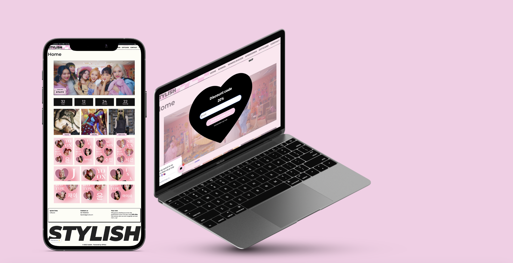
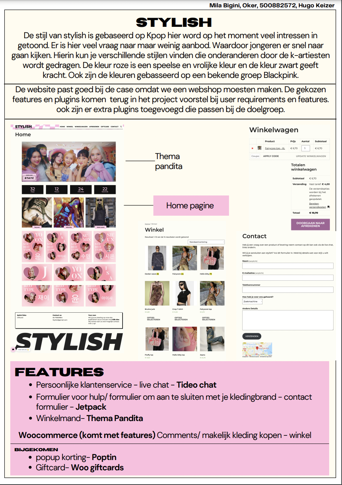
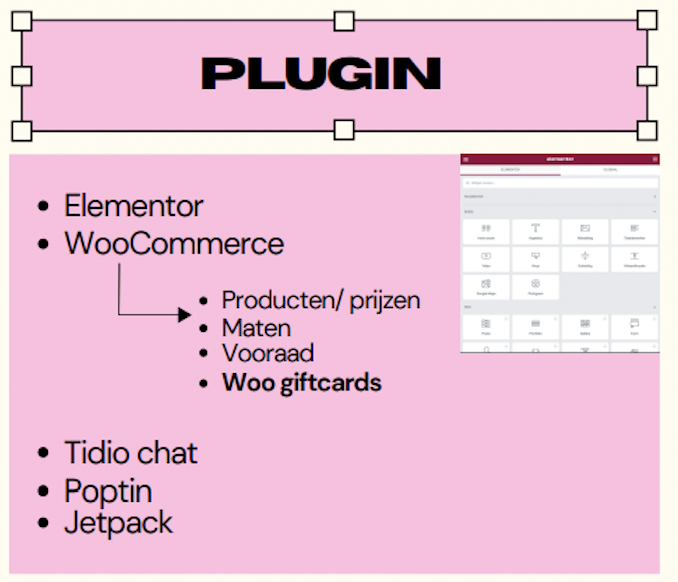

Stylish
Using wordpress, I created a clothing site

I created a clothing website in wordpress. The website has several features for which I used plugins.
The style of stylish is based on Kpop, which is currently very popular. There is much demand but little supply. This makes young people quickly start looking for it. Here you can find different styles worn by the k-artists. The color pink is a playful and happy color and the color black gives strength. Also, the colors are based on a famous group Blackpink.
